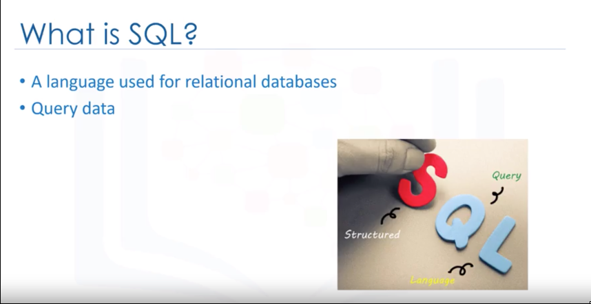
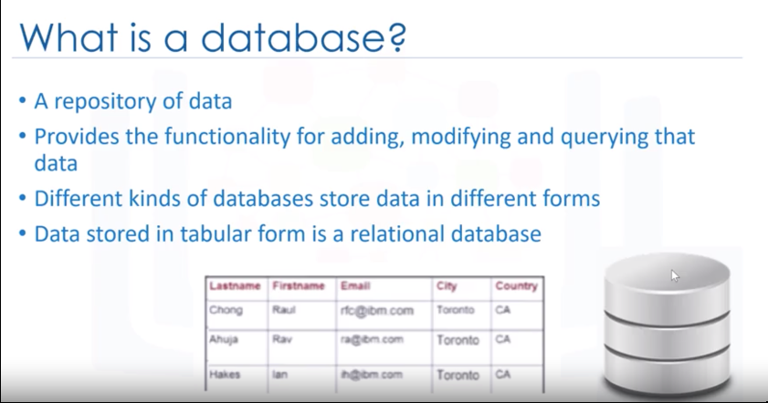
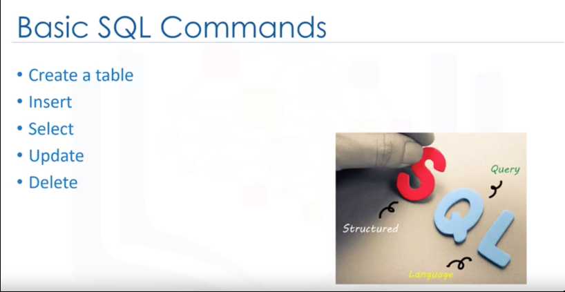
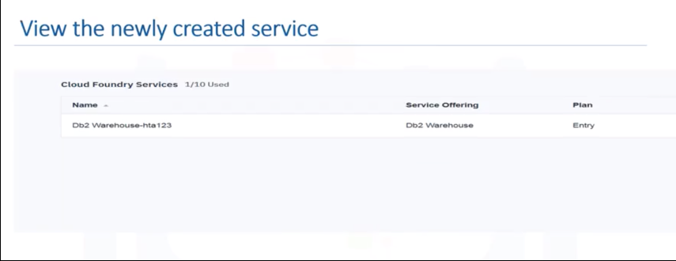
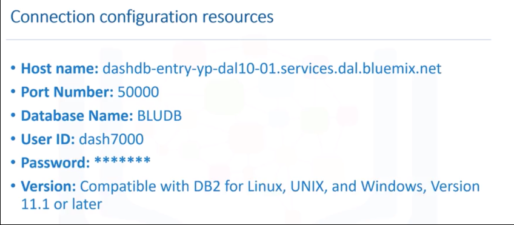

||
Introduction to Databases
We
will discuss SQL basics and explain various aspects of the relational database model.
You
should will be able to describe SQL, data, database,
a relational database and list five basic SQL commands.


The
columns contain properties about the item such as last name, first
name, email address, city. A
table is a collection of related things like a
list of employees or a list of book authors. In
a relational database, you
can form relationships between tables. So
a database is a repository of data.
A
set of software tools for the data in the database is called a
database management system or DBMS for short. The
terms database, database server, database system,data
server and database management systems are often used interchangeably.
In
Classroom QUIZ
Which
of the following statements are correct about databases :
For
relational databases, it's called a relational database management system or RDBMS. RDBMS
is a set of software tools that controls
the
data such as access, organization and storage. And
RDBMS serves as the backbone of applications in many industries including banking, transportation, health
and so on. Examples
of relational database management systems are, mySQL,
Oracle Database,
DB2
Warehouse on Cloud and DB2 Express C.
A
relational database stores data in a tabular format - i.e. in rows and columns. But not all types of
databases use the tabular format.

|| How
to create a Database instance on Cloud?
A
Cloud database is a database service built and accessed
through a Cloud platform.
It
serves many of the same functions as traditional databases with the added flexibility
of Cloud computing.
Users
install software on a Cloud infrastructure to implement the database.Advantages
of using Cloud databases are ease of use, users can access Cloud
databases from virtually anywhere using a vendors API or web interface.
Scalability,
Cloud databases can expand their storage capacities during runtime
to accommodate changing needs, organizations only pay for what they use. Disaster recovery, in the event of
a natural disaster equipment failure or power outage data is kept secure through backups on remote
servers. A few examples of cloud SQL databases are IBM Db2 Warehouse on Cloud, composed for PostgreSQL,
Oracle Database Cloud, Microsoft Azure Cloud, SQL Database, Amazon Relational Database Services, which can
run in the Cloud, either in a virtual machine or as a service depending on the vendor.
|| Creating a
DB2 instance on IBM Cloud

